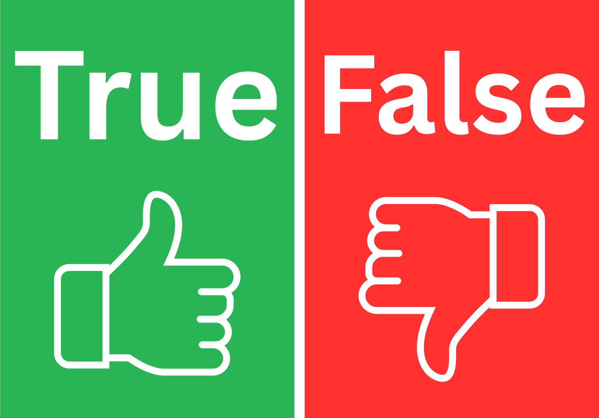
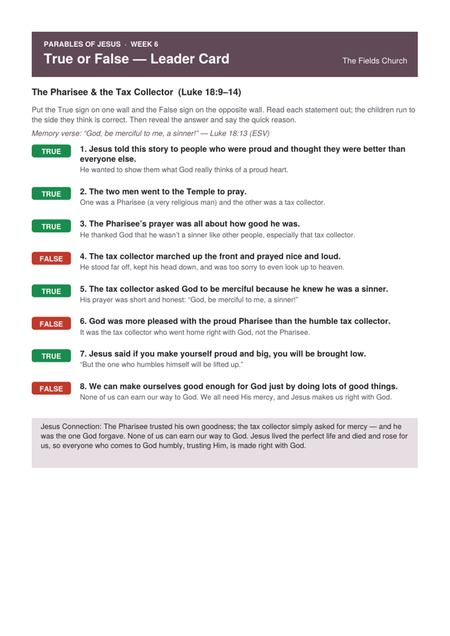
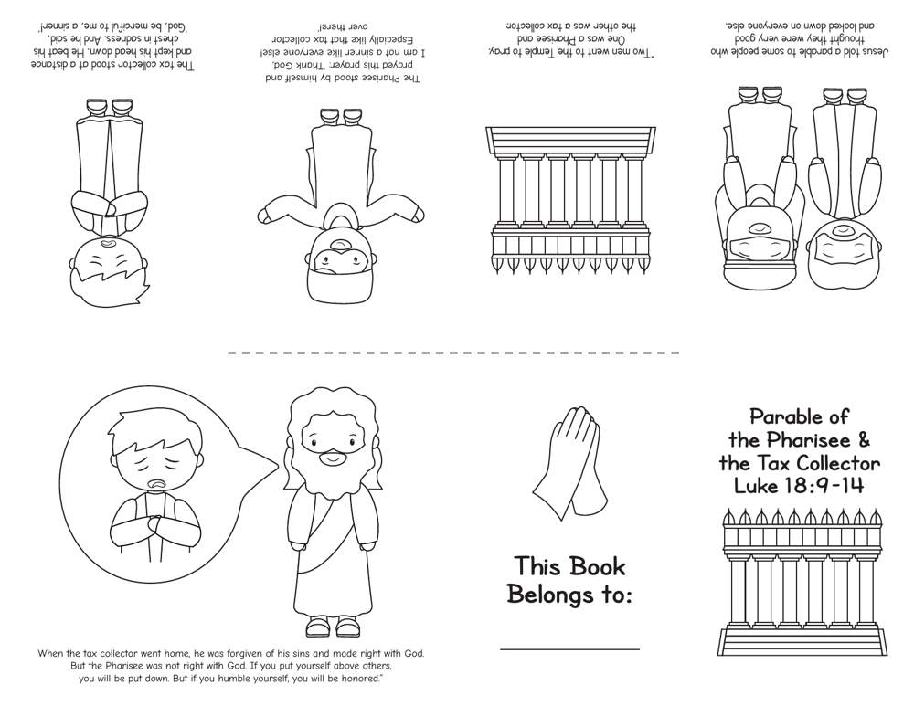
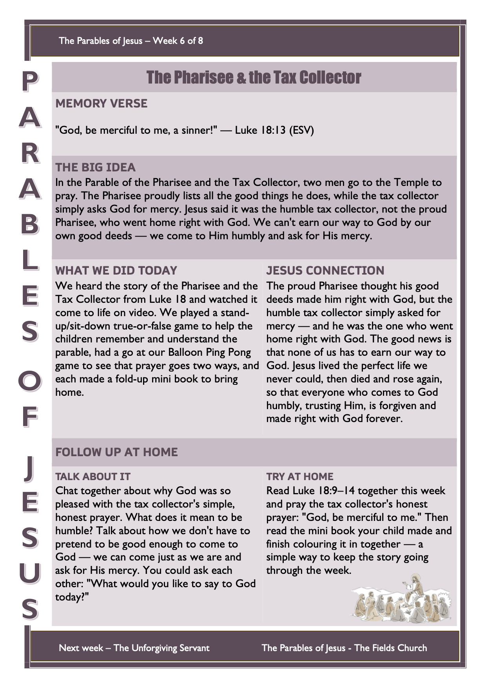

We’re still journeying through the Parables of Jesus — the short, everyday stories Jesus told to teach us something big and true about God. This week’s parable is all about prayer, and it has a surprise ending.
Start by getting the children thinking about talking to God.
A quick, active game to open the session. It sets up today’s big idea: prayer isn’t just talking at God and walking away — it’s a real back-and-forth with a God who hears and answers.
Setup
- Blow up one balloon (keep a couple of spares handy).
- Clear a space, or set a simple “net” — a row of chairs or a length of string across the middle.
- Children can use their hands, or make paper-plate bats if you have them.
How to Play
- Pair the children up (or stand in a circle) and keep the balloon in the air, tapping it back and forth — it takes both sides to keep it going.
- See how long the group can keep the balloon up without it touching the floor.
Bible passage: Luke 18:9–14
Watch the video together, then play the true-or-false recap below.
▶︎ Watch the Bible Story VideoTrue or False – Run to the Wall
Put the True sign on one wall and the False sign on the opposite wall. Read out a statement about the story: children run to the side they think is correct. After each one, reveal the answer and say the quick reason.

Printable leader card — all the statements, answers, and the Jesus Connection to finish on:

Jesus Connection: The Pharisee thought all his good deeds made him good enough for God. But God doesn’t count us right because we tick a list of good things — if He did, none of us would ever measure up. The tax collector had nothing to offer but an honest, humble heart: “God, be merciful to me.” And that’s exactly the man God forgave. Here’s the good news for us: Jesus lived the perfect life we could never live, then died and rose again so that everyone who comes to God humbly, trusting Him, is forgiven and made right with God. We don’t come proud of ourselves — we come trusting Jesus.
🙏 Prayer
Dear God, thank You that we don’t have to pretend to be good enough to come to You. Thank You for Jesus, who died and rose again so we can be forgiven. Please be merciful to us. Help us come to You with humble, honest hearts, just like the tax collector. Amen.
Each child makes their own little book that retells the parable — to colour, fold, and take home, so the story can be read again during the week.
Before the Session
- Print one mini book per child. The download has a colour-in version (page 1) and a ready-coloured version (page 2) — choose whichever suits your group.
- The last page of the download is a simple fold-and-cut guide — keep one handy to show the children.
Materials (per child)
- One printed mini-book sheet
- Colouring pencils or crayons
- Scissors (an adult makes the single centre cut)
- A pen for writing their name
Steps
- Colour in the pictures.
- Fold the sheet in half three times, then unfold to find the eight pages.
- Fold in half and (with adult help) cut the short slit in the centre.
- Open out, then push the ends together and fold into a little book.
- Write your name on the “This Book Belongs to” page, then read it through together.
Mini Book
Print, colour, and fold. Includes a colour-in version, a ready-coloured version, and the fold guide.

Print one per child to send home. Preview below — use the button to download the printable sheet.
